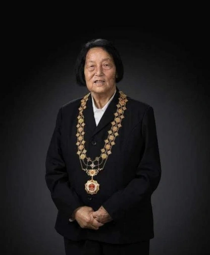
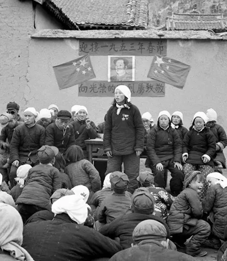
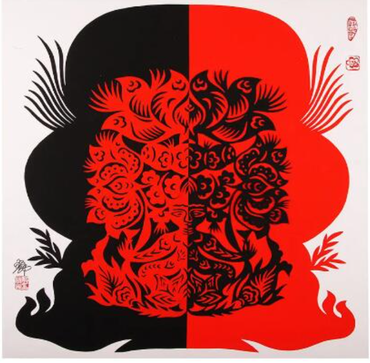
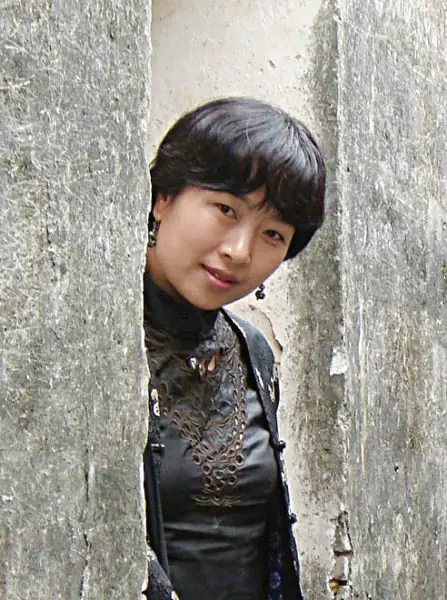

纪实
半边天
无数三晋女儿将个人命运融入宏大时代
请选择展厅
触碰展厅拱门，开启探索之旅
奠基
突围
重塑
芳华
破冰与奠基

申纪兰
申纪兰的生命史，几乎是中国农村妇女解放运动与农村经济体制演进的微缩模型。她的一生横跨新中国建立、改革开放、脱贫攻坚与生态文明建设四个历史阶段，用实际行动诠释了"劳动最光荣"的真理。
—
1954
—
1985
至今

勿忘人民、勿忘劳动。劳动是人生最高贵的事情，也是最有价值的事情。
转型与突围
杨 霞
杨霞拥有硕士研究生学历及高级工程师职称，曾长期在山西医科大学担任讲师，致力于学术研究。2008年，她敏锐捕捉到生物科技领域的产业化前景，毅然创办了锦波生物。
卫红宇
面对如何让村民不出门也能增收的难题，卫红宇通过外出取经，在村里创办了以手工编织为主的专业合作社与香包加工基地。她引入现代商业思维，与电商平台签订销售合同，极大拓宽了产品销路，带领乡亲们走上富足之路。
拓宽香包等销路
引入现代商业思维
确保产品质量
带领乡亲致富
传承与重塑
郭梅花
郭梅花自幼受太姥姥熏陶，对剪纸艺术产生浓厚兴趣，随后又系统学习了国画、油画与版画，深厚的美术功底为其剪纸创作注入了强大的张力与粗犷美。


葛水平
葛水平以对太行山乡土社会的深刻体察，创作出《甩鞭》《喊山》等震撼人心的作品。其中小说《喊山》荣获第四届鲁迅文学奖全国优秀中篇小说奖，极大丰富了当代中国文坛的山西叙事。
谢 涛
谢涛以天命之年依然保持每年惊人场次的下乡演出毅力，扎根基层，将晋剧艺术传递到乡村角落。她精湛的表演艺术两度斩获上海白玉兰戏剧表演艺术奖主角奖，展现了文化守望者对艺术的纯粹信仰。
扎根与芳华
山西省妇女联合会
改革开放以来，山西省妇联始终扎根基层，团结带领全省广大妇女投身经济社会建设。从脱贫攻坚到乡村振兴，从权益保护到关爱帮扶，各级基层妇联组织与妇联干部活跃在三晋大地的每一个角落，将党的声音和关怀送到千家万户，成为推动时代发展不可或缺的硬核“她”力量。
山西，革命老区与能源重地。无数三晋女儿将个人命运融入宏大时代，她们是制度的破冰者，是经济浪潮的弄潮儿，是文化的守望者，也是扎根黄土地的无名英雄。
文献参考：《山西妇女运动史》《申纪兰传》等
本展览依据学术规范整理，所有素材已注明出处
© 2026 习思想实践作业 · 改革开放以来山西女性研究小组（20-3）